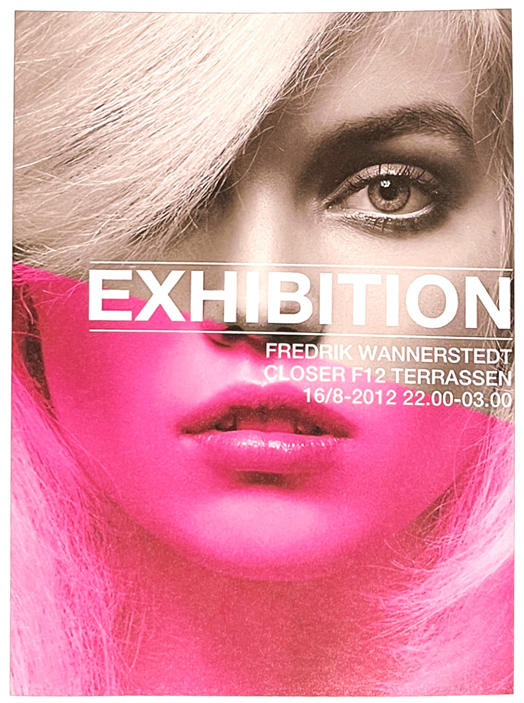
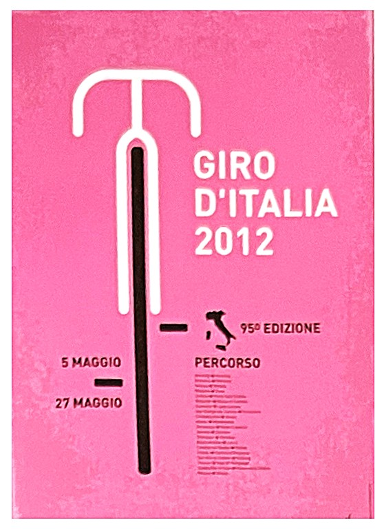
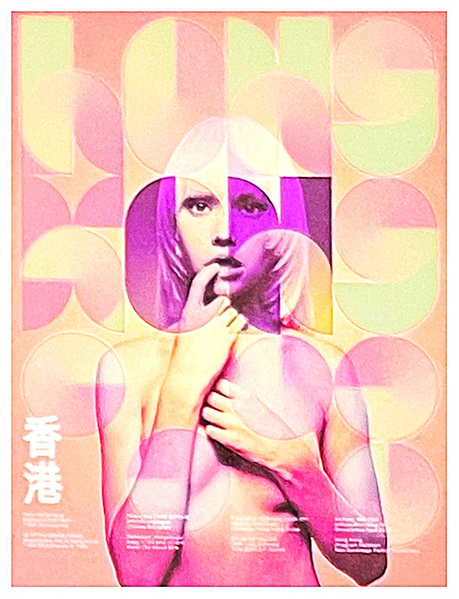

따뜻하면서도 부드러움을 가지고 있고 달콤한 맛과 새콤한 맛을 강하게 느끼게 할 뿐만아니라 단맛을 느끼게도 한다. 만약 공간 인테리러나 테이블 세팅을 분홍색으로 하면 차 맛이 더울 달콤하게 느껴질 것이다.
1. 색의 성격오랜 시간 만들어진 색상이 가지고 있는 성격 : 소녀적, 인정받기 원함, 양면성, 호기심, 긍정, 섬세함, 책임감 2. 색의 영향사람이 인지했을 때 느낌 : 부드러움, 수줍음, 낭만, 애정, 화사, 우아 3. 색의 처방색상을 의도적으로 활용할 수 있는 방법 : 스트레스 해소, 도전적, 자립심 강화, 소외감, 대인관계 원만
분홍색은 강한 여성상을 느끼게 합니다. 거기에 감각적인 사진이 전하는 메시지가 있다면 더없이 좋습니다.
이탈리아 유명회사의자전거 경주 Giro D'italia 포스터 깔끔한 구도와 스트레스 해소적인 색으로 접근했습니다.
Neue Hong Kong -Antony Neil Dart 분홍색으로 호기심이 있는 소녀적인 감성을 표현하였습니다.
분홍색(pink)으로 표현된 패션[1]빨강과 하양의 혼합으로 빨강의 정열과 우아함, 하양의 부드러움과 산뜻한 이미지를 동시에 지닌다. 핫핑크, 마제타와 같이 채도가 높은 원색적 분홍계열은 형광빛을 품어 사이키델릭과 퇴폐적인 이미지를 연출할 때 주로 사용된다.
분홍색 인테리어[1]분홍은 다양한 공간에 적절히 활용되어 세련되고 할기차며 매력적인 공간으로 연출될 수 있다. 이는 공간에 보다 활력있고 장식적인 효과를 주기 위해 액센트로 사용되기도 한다. 검정과 흰색의 단순한 연출에 핑크의 액센트로 보다 부드럽고 신선한 이미미지를 연출할 수 있다. 쇼킹 핑크shocking pink 와 브라운은 고급스러운 색혼합을 연줄해 준다. 또한 회색과의 조합은 대중적으로 많이 사용되는 색혼합 방법이다. 이는 두 색의 강도를 부드럽게 만들면서 세련된 효과도 가져올 수 있다.
[참고문헌]
[1] 색채 기획을 위한 색이야기, 김문여 김봉섭 안희정, 교학연구사, 2011. 6.30.
[2] 좋아 보이는 것들의 비밀 편집&그리드, 이민기 지음, 길벗, 2015.5.1.
....
....
....